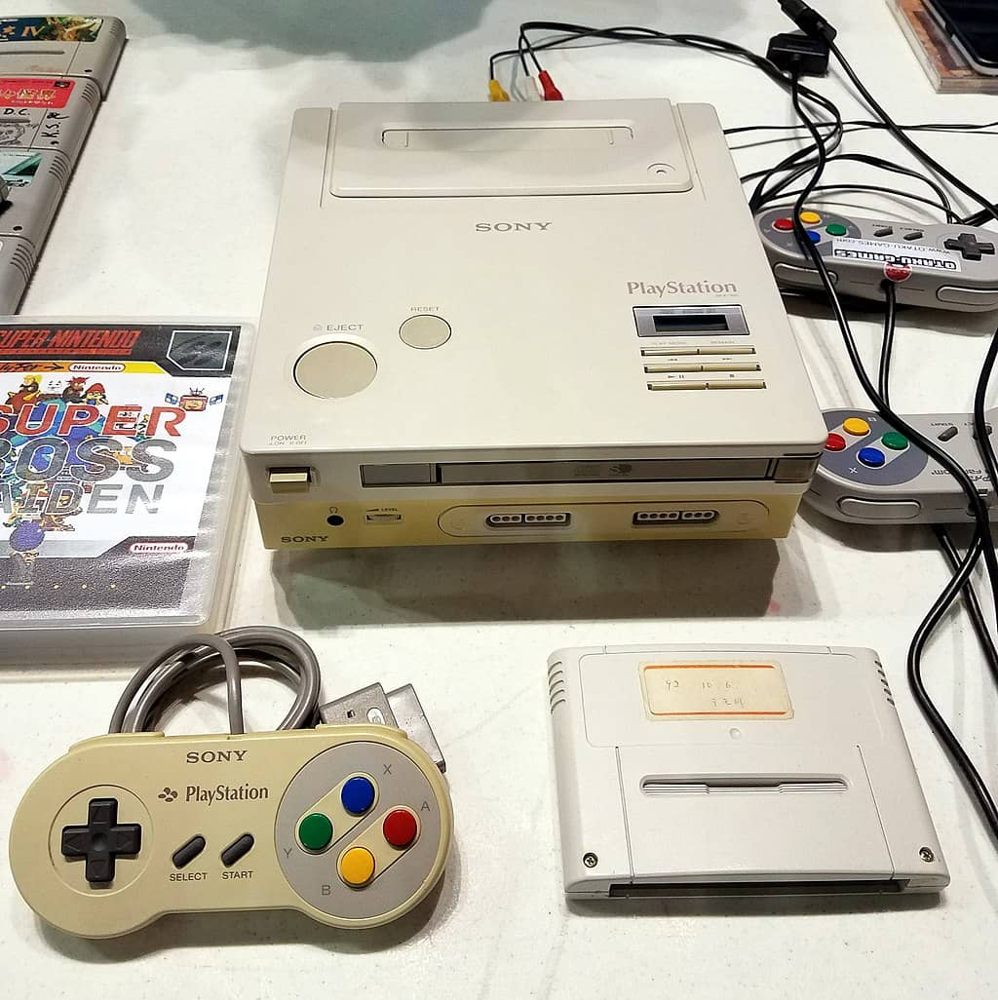

The King Of The 90's Gaming Consoles
Legacy
Sony Computer Entertainment was an upstart in the video game industry in late 1994, as the early 1990s were dominated by Nintendo and Sega. Nintendo had been the clear leader in the video game industry since the introduction of the NES in 1985 and the Nintendo 64 was initially expected to maintain this position for Nintendo. The PlayStation's target audience included 15- to 17-year-olds who were not the primary focus of Nintendo, and 18- to 29-year-olds, who represented the first generation to grow up playing video games. By the late 1990s, Sony became a highly regarded console brand due to the PlayStation, with a significant lead over second-place Nintendo, while Sega was relegated to a distant third.
The PlayStation's lead in installed base and developer support paved the way for the success of the next-generation PlayStation 2, which overcame an early launch from the Sega Dreamcast and then fended off competition from the Microsoft Xbox and Nintendo GameCube.
Marketing
The PlayStation was backed by a successful marketing campaign, allowing Sony to gain an early foothold in Europe and North America.[84] Initially, PlayStation demographics were skewed towards adults, but the audience broadened after the first price drop.[85] While the Sega Saturn was marketed towards 18 to 34 year-olds,[86] the PlayStation was initially marketed exclusively towards teenagers. Executives from both Sony and Sega reasoned that because younger players typically looked up to older, more experienced players, advertising targeted at teens and adults would draw them in too. Additionally, Sony found that adults reacted best to advertising aimed at teenagers; Lee Clow surmised that people who started to grow into adulthood regressed and became "17 again" when they played video games.[87] The console was marketed with advertising slogans stylised as "LIVE IN YOUR WORLD. PLAY IN OURS" and "U R NOT E" (red E).[88][22] Clow thought that by invoking such provocative statements gamers would respond to the contrary and say "'Bullshit. Let me show you how ready I am.'"[89] As the console's appeal enlarged, Sony's marketing efforts broadened from their earlier focus on mature players to specifically target younger children as well
Features
PlayStation models are equipped to play audio CDs; further, Asian model SCPH-5903 can also play Video CDs. The PlayStation can play songs in a programmed order, shuffle the playback order of the disc and repeat one song or the entire disc. Later PlayStation models utilise a music visualisation function called SoundScope.
This function, as well as a memory card manager, is accessed by starting the console without either inserting a game or closing the CD tray, thereby accessing a GUI for the PlayStation BIOS.
The GUI for the PS one and PlayStation differ depending on the firmware version: the original PlayStation GUI had a dark blue background with rainbow graffiti used as buttons, while the early PAL PlayStation and PS one GUI had a grey blocked background with 2 icons in the middle (these were different on each version).
If the CD lid is closed with a game inside at any time while in the menu, the game will start.
History
The PlayStation was the brainchild of Ken Kutaragi, a Sony executive who managed one of the company's hardware engineering divisions and was later dubbed "The Father of the PlayStation".[12][13][14] Kutaragi's interest in working with video games stemmed from seeing his daughter play games on Nintendo's Famicom video game console.[15] The inception of what became the released PlayStation dates back to 1988 with a joint venture between Nintendo and Sony.[6] Nintendo had already produced floppy disk technology to complement cartridges, in the form of the Family Computer Disk System, and wanted to continue this complementary storage strategy for the Super Nintendo Entertainment System (SNES)
A photo of the only known SNES-based PlayStation prototype
Games
There are currently 3071 games.
The final licensed PlayStation game released in Japan (not counting re-releases) was Black/Matrix 00 on May 13, 2004, the final licensed game released in North America was FIFA Football 2005 on October 12, 2004, and the final licensed game released in Europe was Moorhuhn X on July 20, 2005. Additionally, homebrew games were created using the Sony PlayStation Net Yaroze.